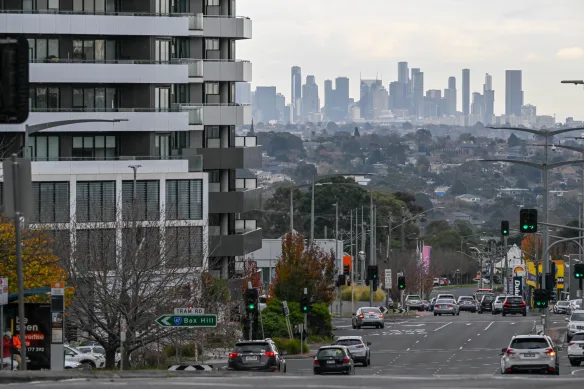

Your Restaurant Discovery & Reservation Platform by Hayden
Hayden's Food Finder helps users discover amazing restaurants in the Doncaster area, providing solid reccomendations and taking reservations with ease. We aim to provide convenience, variety, accessibility, and an enjoyable dining experience for everyone.
Our platform is designed for families, couples, business professionals, students, and tourists looking for quality dining experiences within the Doncaster area.
